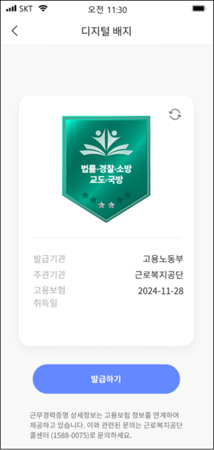
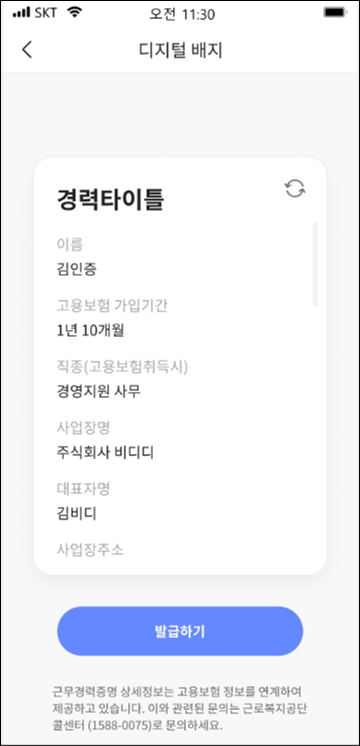
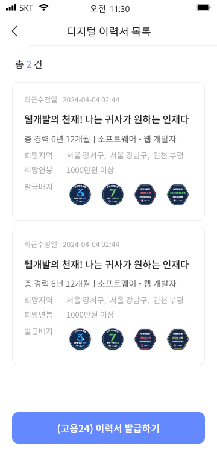
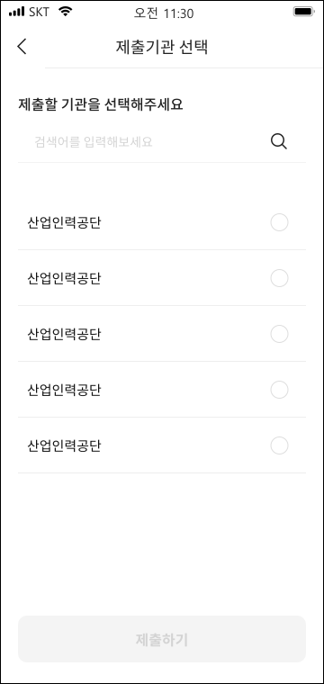

취업준비생이 면접 당일, 스마트폰 하나로 경력증명 배지를 꺼내
기업 담당자에게 바로 제출할 수 있도록 —
PASS 모바일지갑 내 고용24 서비스의 전체 UX를
IA 설계부터 서비스 정책 정의, 화면설계서 작성까지 단독으로 기획했습니다.

Project Overview
The Challenge
배경 및 문제점
- 고용24는 취업지원 핵심 공공 서비스이지만 PC 웹 중심 구조로 모바일 접근성이 낮아 실제 사용률이 제한적이었음
- 경력증명·일증명·직업훈련 등 배지를 취업 현장에서 즉시 꺼내 제출할 수 있는 모바일 경로가 없었음
- 미가입자·실명인증 누락자 등 다양한 사용자 케이스를 수용하면서도 진입 장벽을 낮춰야 하는 설계 과제
The Solution
핵심 해결 방향
- 기능 이식이 아닌 구조 재설계 — 기존 고용24 웹의 복잡한 구조를 모바일 중심으로 단순화, IA 단계에서부터 최단 경로를 설계
- 서비스 정책 직접 정의 — 미가입자/가입자/실명인증 누락자 3개 케이스 분기, 배지·이력서 독립 VC 데이터 정책 수립
- 운영 유연성 확보 — 서비스 목록·아이콘·해시태그를 어드민에서 제어 가능하도록 설계해 개발 배포 없이 운영 수정 가능한 구조 구현
핵심 의사결정 — Why this structure?
사용자 유형별 진입 분기 설계
고용24 미가입자, 가입자, 실명인증 누락자 — 동일한 진입점을 공유하는 3개 케이스를 하나의 플로우로 수용하되, 케이스별 안내 팝업과 이탈 경로를 명확히 정의했습니다. 서비스 이용 불가 상황에서도 사용자가 다음 행동을 스스로 인지할 수 있도록 설계했습니다.
배지·이력서 독립 VC 데이터 정책
배지 삭제 시 이미 발급된 이력서가 함께 변경되지 않도록 배지와 이력서를 독립된 VC(Verifiable Credential)로 관리하는 데이터 정책을 직접 수립했습니다. 이력서는 발급 시점의 정보를 스냅샷으로 저장하는 구조로, 사용자 데이터의 안정성과 신뢰성을 확보했습니다.
어드민 연동 기반 운영 유연성
서비스 목록 순서·아이콘·해시태그·배너 등 운영 단계에서 변경이 잦은 요소를 모두 어드민에서 제어 가능하도록 기획했습니다. 개발 배포 없이도 서비스 운영·수정이 가능한 구조로, 실무 운영 효율을 고려한 설계 결정이었습니다.
Step 01
구조 설계 — IA & Flow
모바일지갑 내 8개 서비스 탭 중 고용24를 중심으로, 사용자가 배지 발급부터 기업 제출까지 최소한의 뎁스로 도달할 수 있는 IA를 설계했습니다. 각 화면의 Page ID와 이동 경로를 문서화해 개발팀과의 커뮤니케이션 기준을 마련했습니다.
Step 02
화면 설계 — 배지 & 이력서
디지털 배지 목록·상세, 이력서 목록·페이지네이션 등 핵심 화면을 설계했습니다. 발급 전·후 배지 상태를 시각적으로 구분하고, 경력증명·일증명·직업훈련 3개 카테고리의 메타데이터 가독성을 개선했습니다.
Step 03
제출 & 내역 관리
배지·이력서 제출부터 이용내역·제출내역 관리까지 end-to-end 플로우를 완결했습니다. 발급·제출 성공/오류 상태 피드백 패턴을 정립하고, 사용자가 제출 이력을 한 곳에서 확인할 수 있는 구조를 설계했습니다.
.svg)





Impact & 프로젝트 규모
5개월 · 20+ 버전 · 단독 기획
v0.1(2024.11)부터 v3.0(2025.04)까지 약 5개월간 20개 이상의 버전을 단독으로 관리하며 기획·설계·정책 정의를 완수했습니다.
3개 사용자 케이스 완전 정의
미가입자·가입자·실명인증 누락자 — 공공 서비스 특성의 복잡한 엣지 케이스를 서비스 정책으로 문서화하고 각 분기 플로우를 설계했습니다.
발급→보관→제출 통합 구조
단일 앱 내에서 디지털 배지와 이력서의 발급·보관·제출 플로우를 end-to-end로 완결. 국세청·관세청 등 공공기관 연동 기반을 마련했습니다.